Cognitive Walk-through
Issues Overview
| Issue | Description | Severity |
|---|---|---|
| Visibility | Image/Identification Quality Not Clear | 3 |
| Conceptual Model | Unclear action to verify image/identification quality | 3 |
| Labeling/Signifiers | Retaking image option not visible/unclear | 2 |
| Labeling/Signifiers | Start button for navigation is unclear (just says "start") | 2 |
| Visibility | Stopping Navigation has no error message | 3 |
Issues 1-3
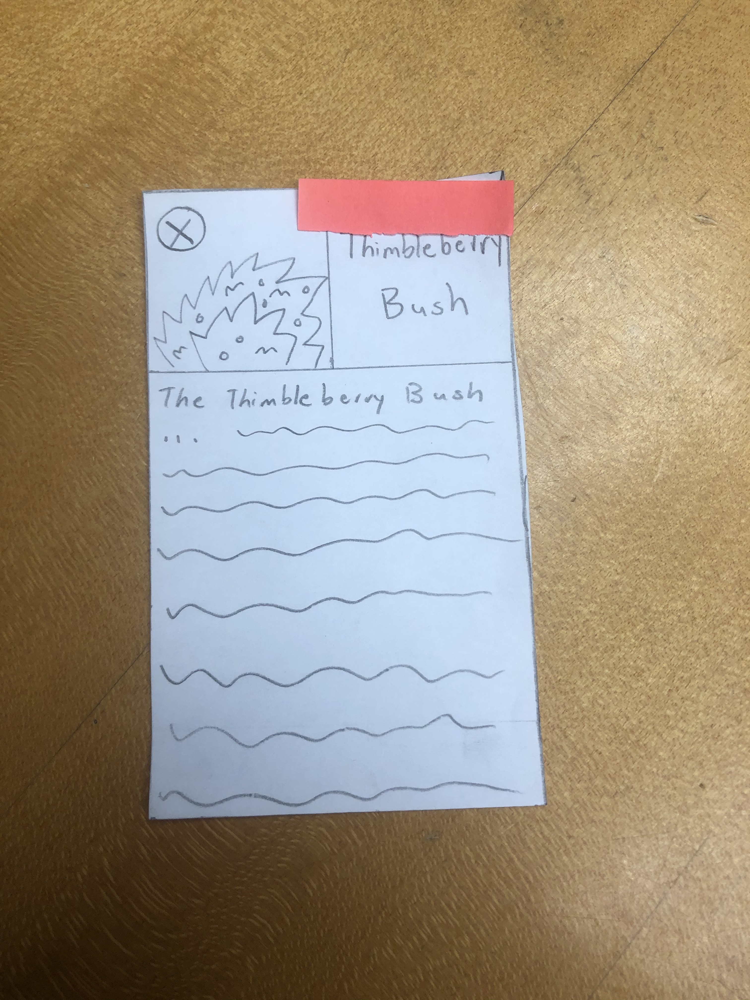
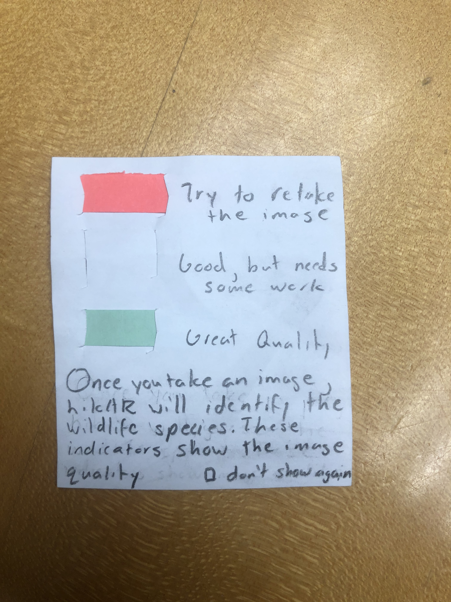
Issue 1
Step: Check to see if the plant was identified correctly. The color tab is placed on the screen but this is likely not enough alone for the user to recognize the status of the image quality.
Issue 2
Step: Check to see if the plant was identified correctly. While the color tab is placed on the identified plant name, this is not enough to guide the user to discover if/if not the identification/image taking was done correctly.
Issue 3
Step: Take another image of the plant if necessary. It is possible for the user to close the identification mode and then reopen to take a picture. However, this requires many steps and extra thinking.
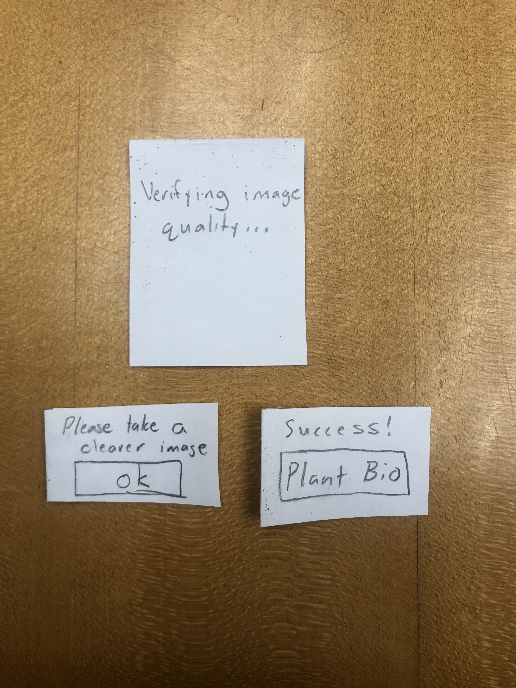
To correct issues 1-3, we have decided to change the image/identification utilities. Now, once a user takes a picture, the app will give feedback on the picture immediately, telling the user to either take the picture again or identifying the plant correctly. This will eliminate the confusion and ambiguity in user action.
Issue 4
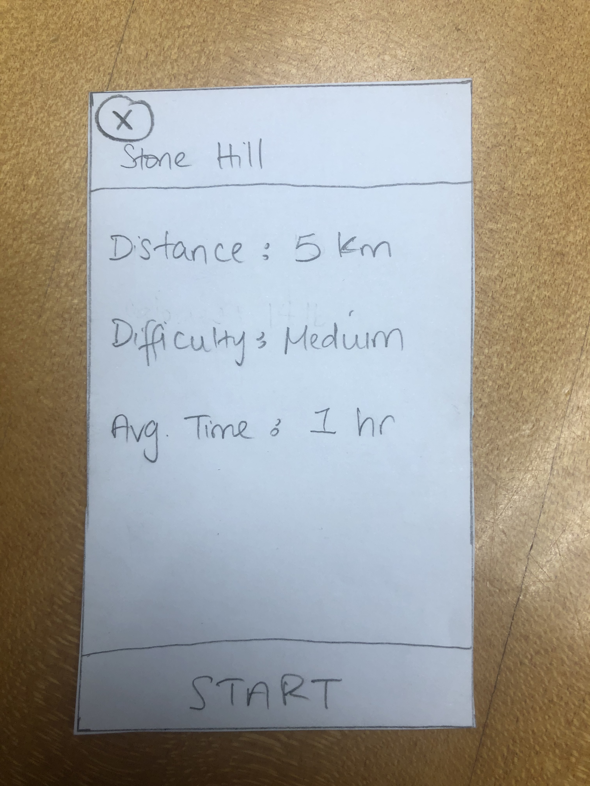
Step: Verify Trail Details and Begin Navigation. The button to begin navigation just says "start" which is potentially unclear.
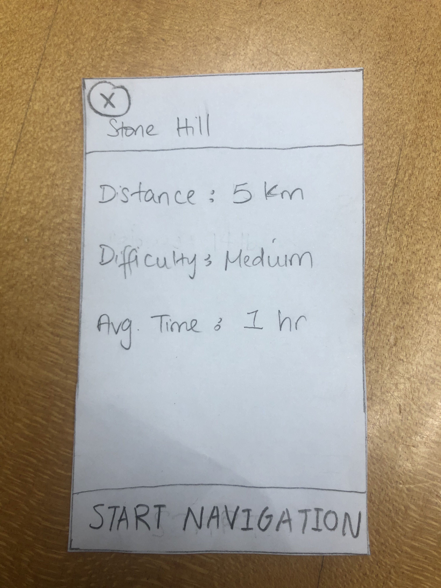
Easy fix! We just changed the text to be "start navigation" instead.
Issue 5
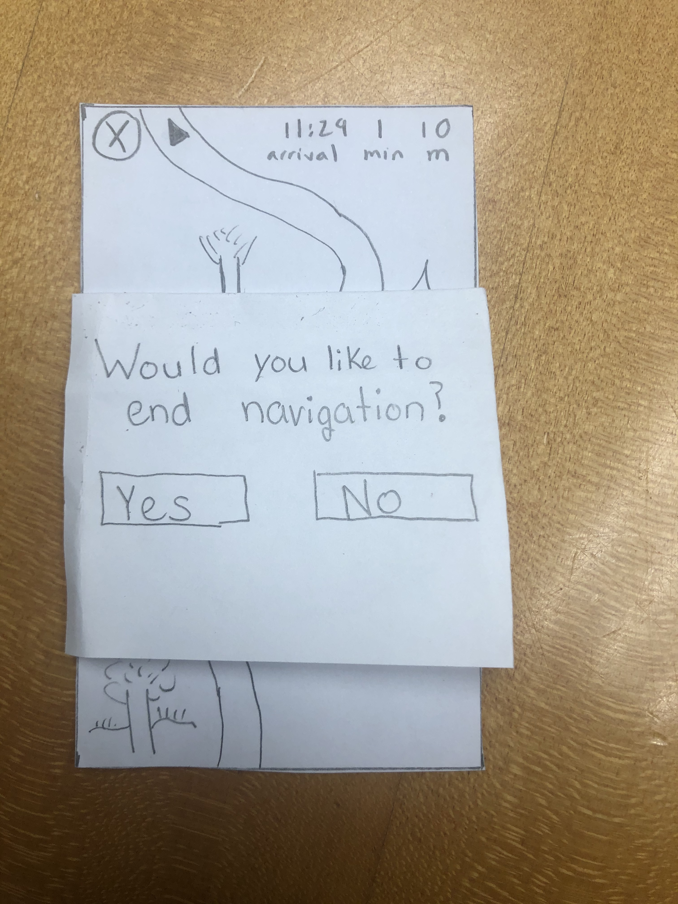
Step: Navigate along the trail. While not part of the task necessarily, there was no error prevention or prompt when the user closed the navigation. So, we have added a pop-up message each time the user clicks the "x" button in navigation.
Usability Test
Task 1 Issues Overview

| Heuristic Broken | Description | Severity |
|---|---|---|
| Recognition | No signup button | 4 |
| Control & Freedom | Wanted to click the nearby trails before searching (need to add screens for that) | 1 |
Task 2 Issues Overview

| Heuristic Broken | Description | Severity |
|---|---|---|
| Real World Mapping | Clicked the focal point instead of the "take a picture" button | 2 |
Task 1
Begin and finish a navigation for Stone Hill.
Task 2
Identify and learn about two different plant species.
Test Description
The participant for our usability test was a sophomore attending Williams College. We chose this participant because she is enthusiastic about hiking and enjoy going on a weekly trip around the beautiful purple valley. With this knowledge, the team figured she would be the perfect candidate to test out our app and to see if our prototype design was somewhat feasible. We conducted our usability test in Eco Cafe, where its central and quiet during after hours. This allowed us and our participant to focus on the task at hand and provide a space to free the mind and provide a clear discussion. During the usability test, Gaurnett was the main one communicating with our customer. Rudy and Eric assisted with making notes about what happened during the test such as the customer feedback and questions during the test, flaws in the design that led to customer to performing the wrong action thus not receiving her desired result and improvements we can make based on the interaction between Gaurnett and the customer.
We introduced the project by giving a synopsis of the problem that we are trying to solve as well as who we are trying to serve. This allowed us to give a general overview of the project and give the participant an idea of what we are trying to do. Afterwards we explained the scenarios one by one that we would like her to perform. We then observed her as she went through the app and then made notes on issues that came up. One issue was that we did not have a sign up button on the login screen. Another issue we had was when she tried to identify the plant. She tapped the focal box to take the picture instead of tapping the “Identify This” button.
Incident One
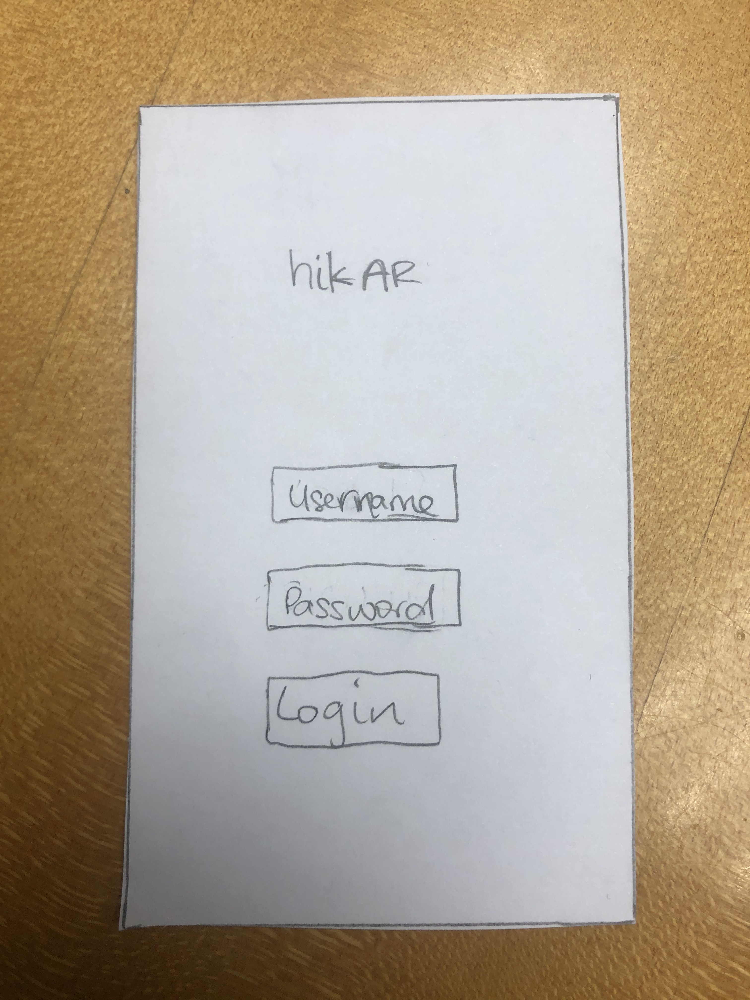
Sign Up button: This was a negative incident because if the user does not have an account they would not be able to use our app. The severity of this would be a 4
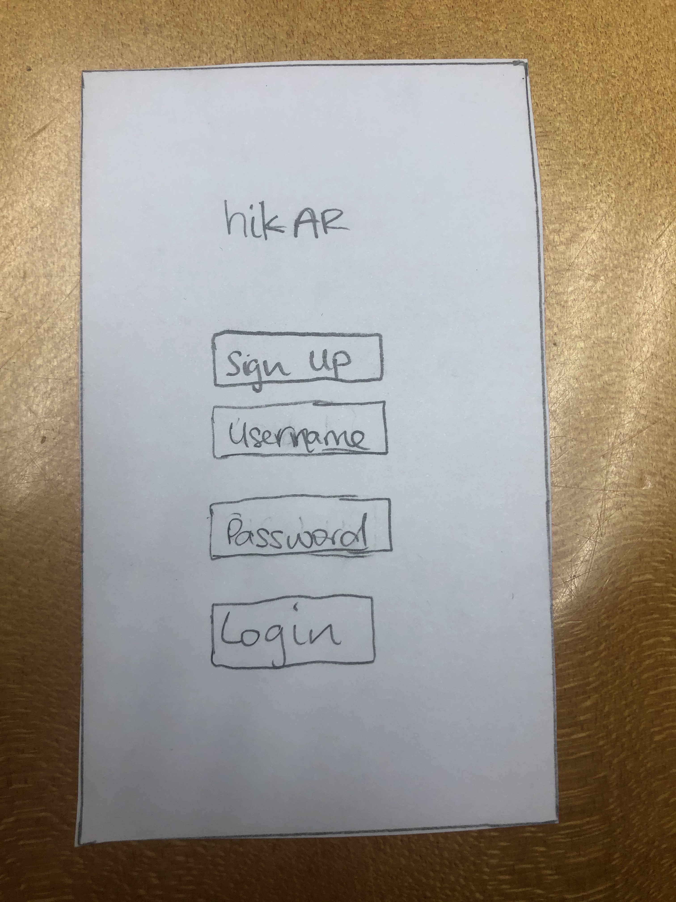
We have just added a sign-up button for first time users on the test.
Incident Two
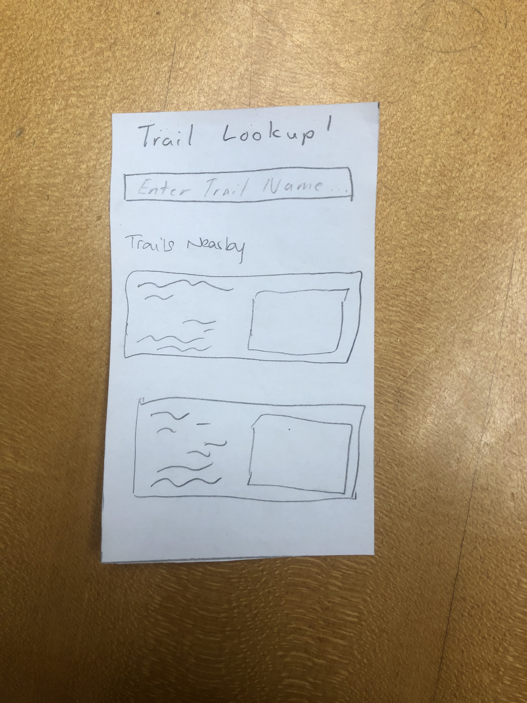
Clicking the first trail: This was a negative incident. When we asked our participant to search for Stone Hill, her first reaction was to tap the first trail that was present on the screen instead of actually searching for the hike. The severity of this would be a 1.
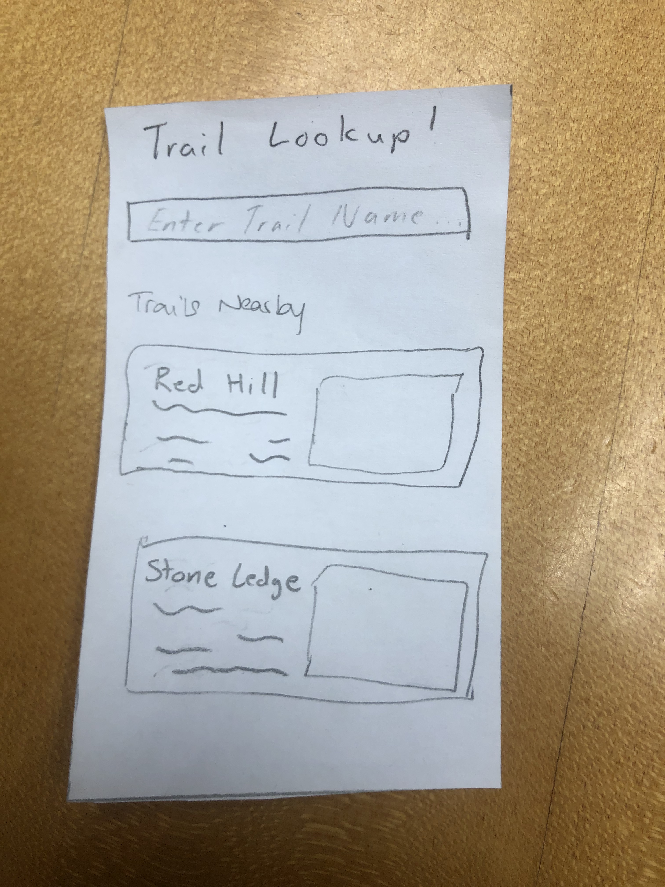
We have changed the prototype so that the nearby hike descriptions are not scribbles anymore. This way, if we tell the user to look for a specific hike it will be more clear and we can gear futher usability tests differently in the future.
Incident Three
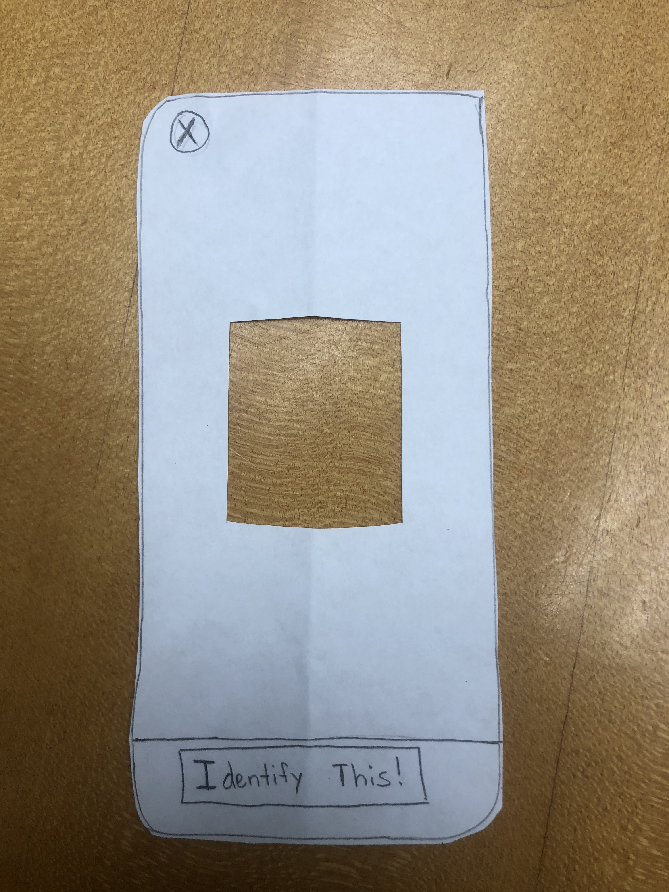
Tapping the Focal Point: This was a negative incident. When the participant was trying to take a picture of the plant she wanted to identify, she ended up tapping the focal point instead of the button at the bottom of the screen. We realized that this was perhaps just because she was using a paper prototype why this occurred. On a real device the user would perhaps tap the focal point to focus on the image instead of taking it and then tap the button at the bottom to take the actual picture when they are ready. The severity of this would be a 2.
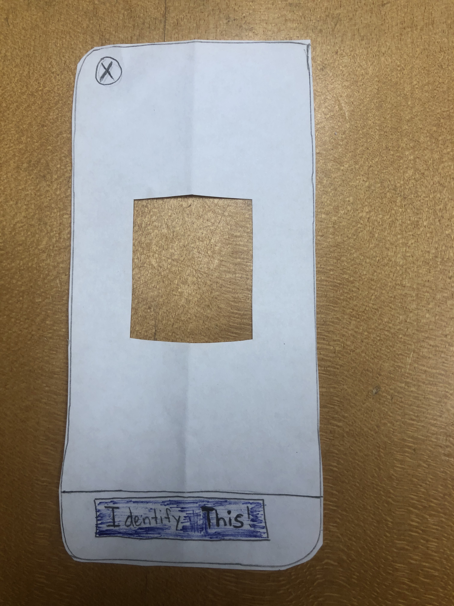
To make it more clear what action the user should take, we have colored the "Identify this!" button.
Incident Four
Identifying the second plant correctly: this is a positive incident. After learning about the button at the bottom of the screen, the user was able to easily identify another wildlife.
Incident Five
Navigating through the route effectively: This was a positive incident. After selecting stone hill, our participant was able to navigate through the hike fluently to arrive at her destination.
Future Plans
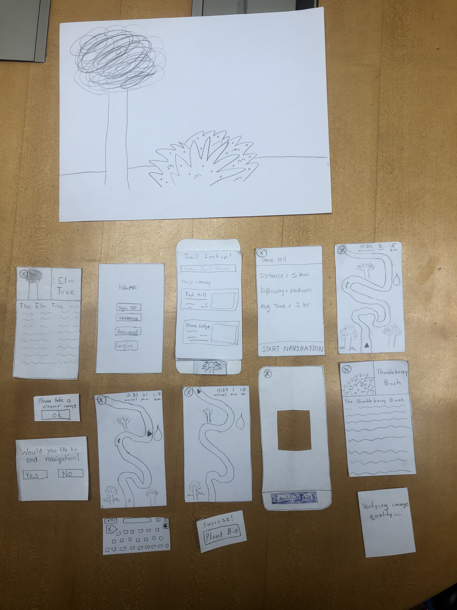
In our future usability tests, we would like to diversify our participants in order to gather data from people with different experience and interest levels with hiking and wildlife identification. This will hopefully lead to us discovering more areas in which we can improve our design as each user will be coming into the usability test with different expectations and needs. We already have two specific subjects in mind who meet these requirements. Since we did not run into many incidents during this usability test, we hope to expand the number of options given to the user in terms of routes, identifiable objects, and the amount of information given about said objects before the tests in order to see if any new issues arise or if the simplicity of our design can be maintained when the user’s choices expand. Furthermore, although we did not give much guidance beyond a description of the task we wanted the user to accomplish and a description of what certain buttons do when asked, we might consider giving even less advice for the second usability test to see how, if at all, that affects the way in which our user navigates throughout our design. With that, we can then find a happy medium for our final usability test. For subsequent tests, we also plan on swapping roles for who is engaging with the user and who is observing and taking notes. For example, for the next test, we might have Rudy communicating with the user while Gaurnett and Eric take notes so that every member gets an opportunity to conduct a usability test and utilize the techniques that we have read about and discussed in class.